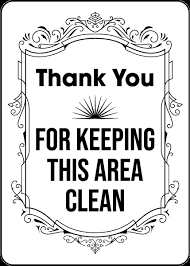

THANK YOU FOR SIGNING
Thank You!

Your active help is what will keep our streets clean!
More ways to keep oakland clean
- volunteer to pick up trash in your neighborhood
- educate your friends and family about the importance of keeping our streets clean
- participate in community clean-up events
- reduce your use of single-use plastics
- report illegal dumping to local authorities
Back to Submittions page
if youd like to learn more about Oaklands Garbage Crisis READ THESE...